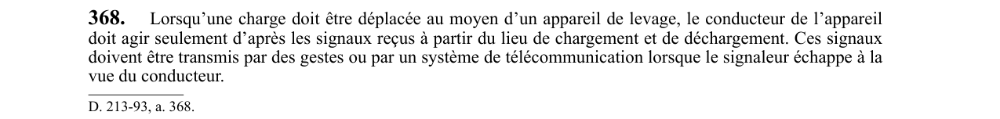

art-368-RSSM : signaux au conducteur d'appareil de levage
Un article du wiki ⚖️ Recueil législatif
En bref
- S'applique dès qu'une charge est déplacée au moyen d'un appareil de levage.
- Source unique d'autorité : le conducteur n'obéit qu'aux signaux provenant du lieu de chargement et de déchargement.
- Toute autre instruction, d'où qu'elle vienne, reste sans effet sur la manœuvre.
- Deux véhicules de signal admis : les gestes, ou un système de télécommunication.
- Le système de télécommunication devient obligatoire dès que le signaleur sort du champ de vision du conducteur.
- Visé : travailleur (conducteur et signaleur) · Nature : obligation (communication)
🌐 LegisQuébec · 📄 PDF officiel
Texte officiel
Lorsqu’une charge doit être déplacée au moyen d’un appareil de levage, le conducteur de l’appareil doit agir seulement d’après les signaux reçus à partir du lieu de chargement et de déchargement. Ces signaux doivent être transmis par des gestes ou par un système de télécommunication lorsque le signaleur échappe à la vue du conducteur.
Texte de l’article 368 RSSM, extrait de la couche texte du PDF officiel (page 94), sans OCR ni retouche. La capture ci-dessous et le PDF font foi.
{kind=link}

Toucher l'image pour l'agrandir🔗 Voir art. 368 RSSM dans le PDF (page 94)
Version : texte officiel du RSSM (RLRQ c. S-2.1, r. 14), à jour au 1er mai 2024, Éditeur officiel du Québec
Voir aussi
- art. 367 : conformité au règlement sur les ascenseurs · renvoi réglementaire.
- art. 369 : deux interdits au conducteur de levage · charge au-dessus d'une personne, appareil laissé seul.
- art. 370 : inspection mensuelle des grues · entretien de l'appareil.
- ⚖️ Loi habilitante : LSST
- ↑ Index du bloc : Installations diverses
Pages qui pointent ici (3)
- art-367-RSSM : conformité au règlement sur les ascenseurs Recueil législatif
- art-369-RSSM : deux interdits au conducteur de levage Recueil législatif
- RSSM : Installations diverses (art. 350 à 379) Recueil législatif